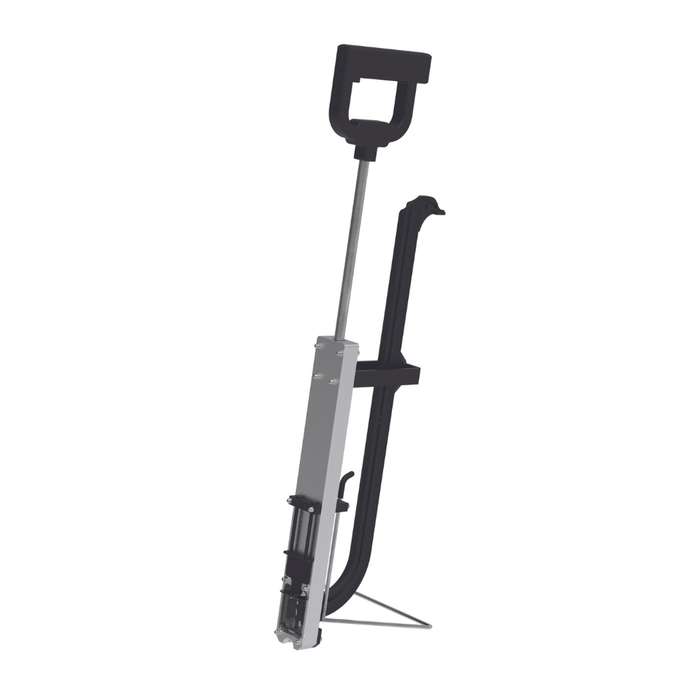

Makine per Klipsa
Marrësi është një pajisje ergonomike që përdoret për instalimin e shpejtë të kapëseve që sigurojnë tubat e ngrohjes nën dysheme. Marrësi është i dedikuar dhe funksionon në mënyrë perfekte me kapëse TiA me gjatësi: 38, 40, 45, 50 ose 60 mm. Pajisja ka një sistem të përshtatshëm rregullimi që mbron kapëset nga rënia dhe ju lejon të vendosni forcën e kthimit të krahut në pozicionin bazë. Dizajni i rifreskuar dhe ergonomik e bën punën edhe më të lehtë, dhe përdorimi i një dritareje inspektimi me një përplasje thjeshton ndjeshëm heqjen e kapëses së mbërthyer në mbajtës në rast bllokimi të mundshëm.